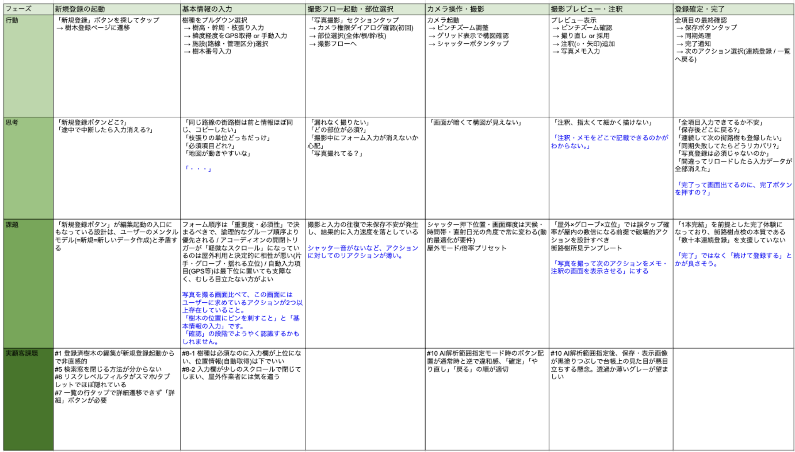
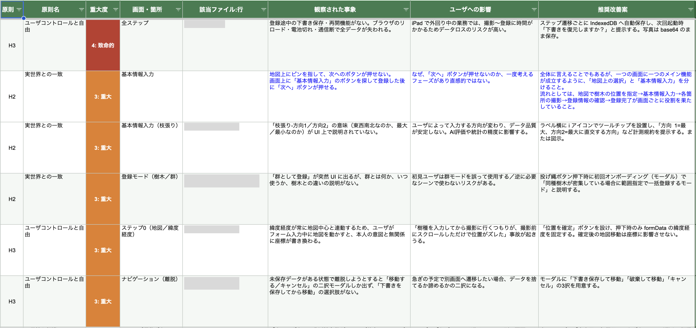

CASE STUDY — 01
街路樹や施設の樹木を対象に、点検・写真記録・AIによるリスク評価・メンテナンス履歴を一元管理するWebアプリ。点検員が現場のスマホ・タブレットで使うことを前提に、情報量の多い業務システムのUI/UXを、UXリサーチから画面設計まで担当しています（開発チームのレビューを受けながら進行中）。
Design Process
Research
リサーチ
Define
課題定義
Design
設計
Ongoing
改善進行中
点検には専門知識が必要で、樹木ごとに基本情報・点検結果・AI評価・写真・メンテナンス履歴と、扱う情報が多岐にわたります。現場の点検員が必要な情報へ素早くたどり着けることが、最優先の課題でした。
利用シーンも現場（スマホ・タブレット）と管理（PC）で大きく異なり、デバイスごとの最適化が不十分な箇所もありました。これらを踏まえ、点検員が最初に必ず触れる新規登録フローから優先的に改善を進める方針を立てました。
先輩デザイナーとの2名体制で進めています。先方とのやりとり・サイトツリーの作成・一部の画面デザインは先輩が担当し、自分はヒューリスティック評価とカスタマージャーニーマップによるUXリサーチ、ベンチマーク調査、各画面の構成とデザイン作成を担当しました。

カスタマージャーニーマップ — 新規登録フローの体験を可視化し、迷いや離脱が起きやすい箇所を特定

ヒューリスティック評価 — AIによるコードレベルの分析と目視を併用し、登録の入口・撮影フィードバック・連続登録の扱いに課題を特定
発見した課題は複数の画面にまたがっていたため、すべてを同時に扱わず、点検員が最初に必ず触れる「新規登録フロー」から着手する方針を決めました。優先した理由は3つです。
この起点を軸に、下流の詳細画面・一覧へと順に改善を展開しました。限られた工数の中で「どこから解くか」を決めることを、設計の第一歩に置いています。
APPROACH
点検結果（専門家診断／2次点検・AI評価・写真・メモ）とメンテナンス履歴を優先度順に整理し、リスクの高い部位・項目を先に見せる表示順にしました。
セクション内ジャンプや現在位置ナビを追加。タッチ端末で機能しにくかった編集導線（鉛筆＋title属性）も見直しました。
PC・タブレット・スマホそれぞれで表示を最適化。幹周の桁数やフォント調整、iPad縦画面の不具合まで、実機で確認しながら対応しました。
まだ多くの画面が改修中のため、完成した最終画面ではなく、主要な場面ごとに「どんな課題を、どう判断し、なぜそう決めたか」を整理しました。
登録の入口
位置と基本情報
撮影
詳細画面
リスクレベルを配色ルールで表現し（中間リスクを示す黄系を追加）、あわせて色だけに依存しない状態表現を用いました。色覚特性にかかわらず、現場で危険度が瞬時に伝わることを狙っています。
行政での利用を見据え、インフラ点検要領や技術カタログといった公的資料をベンチマークに表示を検討。JIS X 8341-3 を意識し、コントラストやテキストの可読性にも配慮しました。
色だけに頼らず、形状とラベルでも状態が読み取れるようにしています（配色は本番UIに準拠する想定の模式図です）。
優先度としては新規登録フローから着手しましたが、連続登録の扱いや撮影時のフィードバックなど考慮すべき点が多く、仕様の確定に時間がかかっています。並行して進めていた詳細画面が先に確定したため、まずはそちらから改修を反映しました。優先順位は決めておきながら、確定した順に出していく判断も必要だと学んだ場面です。
本案件は2026年9月のベータ提供開始に向けて進行中で、多くの画面は現在も改修を続けています。だからこそ、完成した最終画面よりも「何を課題と捉え、どう優先順位をつけ、どう判断したか」を残すことを重視しました。情報量の多い業務システムを、現場の点検員が迷わず使える「使える画面」へ落とし込むという設計スタンスがはっきりした案件になりました。